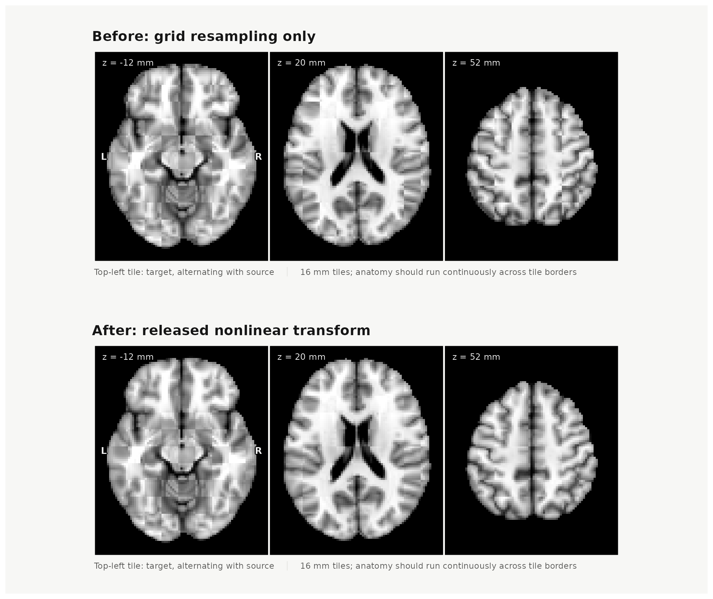
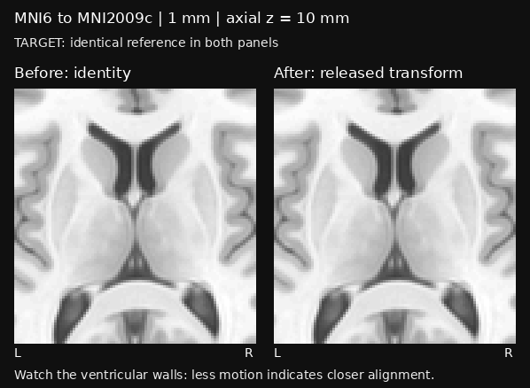

A template transform moves samples between explicitly named image
grids. It does not estimate a registration, infer an atlas
correspondence, or change a parcellation’s region identities.
neuroatlas resolves an available route and samples the
source once on the target grid.
The application API requires the optional neurotransform
and hdf5r packages. Install the engine revision pinned in
neuroatlas’s Remotes field; the runtime checks its H5
conventions against independent fixtures.
Transform a volume on an explicit target grid
Use get_template_transform() followed by
apply_template_transform(). The built-in MNI305-to-MNI152
affine route is available without a download. This offline example
supplies continuous semantics and both image grids.
library(neuroatlas)
if (!requireNamespace("neurotransform", quietly = TRUE)) {
stop("This vignette requires the optional neurotransform package.")
}
source_grid <- neuroim2::NeuroSpace(
c(5L, 5L, 5L), spacing = c(2, 2, 2), origin = c(-4, -4, -4)
)
source <- neuroim2::NeuroVol(array(seq_len(125), c(5, 5, 5)), source_grid)
target_grid <- neuroim2::NeuroSpace(
c(5L, 5L, 5L), spacing = c(2, 2, 2), origin = c(-4, -4, -4)
)
transform <- get_template_transform(
"MNI305", "MNI152", provider = "neuroatlas", offline = TRUE
)
transformed <- apply_template_transform(
source, transform, target_grid, data_type = "continuous"
)
c(
source_range = range(as.vector(source)),
transformed_range = range(as.vector(transformed)),
output_dimensions = paste(dim(transformed), collapse = " x ")
)
#> source_range1 source_range2 transformed_range1 transformed_range2
#> "1" "125" "0" "107.228130585401"
#> output_dimensions
#> "5 x 5 x 5"The target grid is part of the analysis definition: dimensions, affine, spacing, and origin determine where values are evaluated. A bare grid asserts that it belongs to the transform’s target template. Attached source or target metadata must agree with the route.
receipt <- attr(transformed, "neuroatlas_transform")
receipt[c("from_space", "to_space", "data_type", "interpolation", "renormalized")]
#> $from_space
#> [1] "MNI305"
#>
#> $to_space
#> [1] "MNI152"
#>
#> $data_type
#> [1] "continuous"
#>
#> $interpolation
#> [1] "linear"
#>
#> $renormalized
#> [1] FALSESelect sampling semantics
data_type is a sampling contract. Labels and masks use
nearest-neighbour sampling, so output values remain source labels or
zero outside the source field. Continuous values and probability
channels use linear interpolation. Probability values are not
renormalized after resampling.
For an atlas, label semantics are automatic. For a bare
NeuroVol or NeuroVec, supply
data_type unless metadata already declares its contents.
The package rejects a conflict between metadata and an explicit
type.
When a target clips a labelled atlas, the atlas retains all semantic
ids, labels, and provenance. The receipt records only IDs
absent from the output.
aligned_atlas <- transform_atlas(
atlas, to_space = "MNI152", target = target_grid, provider = "neuroatlas"
)
attr(aligned_atlas, "neuroatlas_transform")$lost_label_idstransform_atlas() changes image space; it does not make
labels from different parcellations equivalent. After alignment, use
atlas_overlap() to inspect spatial relationships.
map_atlas() retains its original role of mapping supplied
regional values onto an atlas.
Inspect population cortical projection coverage
Volume-to-cortex projection can discard parcels even when
interpolation is implemented correctly. Inspect each map and each stage
with projection_diagnostics(). The summary reports missing
source parcels, parcels lost during subsequent surface resampling, and
wrong-hemisphere output counts. The label table retains source voxel,
sampled surface vertex, and final surface vertex counts separately;
these counts are not interchangeable measures of area or volume.
atlas <- get_schaefer_atlas(parcels = 200, networks = 7, resolution = 2)
surface <- get_surface_geometry("fsLR", "32k", "L")
projection <- get_surface_projection("MNI152NLin6Asym", surface)
projected <- apply_surface_projection(atlas, projection)
qa <- projection_diagnostics(projected)
qa$summary
subset(qa$labels, lost_at_sampling | lost_at_resampling)
subset(qa$labels, hemisphere_mismatch)not_sampled identifies a source key with no supported
first-stage sample; lost_resampling identifies a key that
survives sampling but has no final surface vertex. Declared keys absent
from the input are absent_source. Supported key zero is
counted separately. Masked or unavailable vertices never contribute to
label counts, and remain visible in the existing coverage fields.
Atlas inputs supply their declared hemisphere metadata. For bare
volumes, provide a label_table with an optional
hemisphere column (L, R,
both, or NA). Opposite-hemisphere source keys
are excluded from expected parcel-loss totals, while any output vertices
carrying them are reported. Without those declarations, diagnostics
report unchecked_labels; they do not infer hemisphere from
region names or numeric key ranges. The diagnostics preserve projected
values and expose issues for review.
The pinned Schaefer1000 quality campaign found three source parcels absent from fsLR output (keys 214, 710 and 903), with loss localized to surface resampling. Key 903 is also absent from the published fsLR reference. This limitation is retained in the quality report; agreement with a published atlas is diagnostic compatibility, not independent anatomical validation. Where the required atlas is already published on the target surface, its native labels avoid adding another population projection.
Route availability and nonlinear artifacts
The manifest includes executable routes and broad roadmap
placeholders. executable means that the API supports a
registered route when its required dependencies and verified inputs are
present; it is not a local installation check. Surface routes require
the recorded exact domains, hemisphere and method. The legacy
MNI305/MNI152 affine describes a coordinate family, rather than a
qualified exact template pair.
manifest <- space_transform_manifest()
manifest[manifest$executable, c(
"from_space", "to_space", "hemisphere", "from_density", "to_density",
"backend", "route_scope"
)]
#> from_space to_space hemisphere from_density to_density
#> 1 MNI305 MNI152 <NA> <NA> <NA>
#> 2 MNI152 MNI305 <NA> <NA> <NA>
#> 3 MNI152NLin6Asym MNI152NLin2009cAsym <NA> <NA> <NA>
#> 4 MNI152NLin2009cAsym MNI152NLin6Asym <NA> <NA> <NA>
#> 13 fsaverage fsLR_32k L 164k 32k
#> 14 fsLR_32k fsaverage L 32k 164k
#> 15 fsaverage fsLR_32k R 164k 32k
#> 16 fsLR_32k fsaverage R 32k 164k
#> 17 MNI152NLin6Asym fsaverage L <NA> 164k
#> 18 MNI152NLin6Asym fsLR_32k L <NA> 32k
#> 19 MNI152NLin6Asym fsaverage R <NA> 164k
#> 20 MNI152NLin6Asym fsLR_32k R <NA> 32k
#> 21 MNI152NLin2009cAsym fsaverage L <NA> 164k
#> 22 MNI152NLin2009cAsym fsLR_32k L <NA> 32k
#> 23 MNI152NLin2009cAsym fsaverage R <NA> 164k
#> 24 MNI152NLin2009cAsym fsLR_32k R <NA> 32k
#> 25 fsaverage fsaverage6 L 164k 41k
#> 26 fsaverage6 fsaverage L 41k 164k
#> 27 fsaverage fsaverage5 L 164k 10k
#> 28 fsaverage5 fsaverage L 10k 164k
#> 29 fsaverage fsaverage6 R 164k 41k
#> 30 fsaverage6 fsaverage R 41k 164k
#> 31 fsaverage fsaverage5 R 164k 10k
#> 32 fsaverage5 fsaverage R 10k 164k
#> backend route_scope
#> 1 internal_affine coordinate_family
#> 2 internal_affine coordinate_family
#> 3 neurotransform exact_template_pair
#> 4 neurotransform exact_template_pair
#> 13 neurotransform_native exact_surface_domains
#> 14 neurotransform_native exact_surface_domains
#> 15 neurotransform_native exact_surface_domains
#> 16 neurotransform_native exact_surface_domains
#> 17 cbig_registration_fusion exact_volume_to_surface
#> 18 cbig_registration_fusion exact_volume_to_surface
#> 19 cbig_registration_fusion exact_volume_to_surface
#> 20 cbig_registration_fusion exact_volume_to_surface
#> 21 cbig_registration_fusion exact_volume_to_surface
#> 22 cbig_registration_fusion exact_volume_to_surface
#> 23 cbig_registration_fusion exact_volume_to_surface
#> 24 cbig_registration_fusion exact_volume_to_surface
#> 25 neurotransform_native exact_surface_domains
#> 26 neurotransform_native exact_surface_domains
#> 27 neurotransform_native exact_surface_domains
#> 28 neurotransform_native exact_surface_domains
#> 29 neurotransform_native exact_surface_domains
#> 30 neurotransform_native exact_surface_domains
#> 31 neurotransform_native exact_surface_domains
#> 32 neurotransform_native exact_surface_domainsPlanned rows describe proposed methods with no executable contract.
They can share family names with an admitted exact route: a planned
sphere_nn or Workbench method is a separate proposal from
qualified native barycentric resampling. A family name alone does not
identify an ordered surface mesh.
manifest[manifest$route_scope == "roadmap_placeholder", c(
"from_space", "to_space", "backend", "status", "executable"
)]
#> from_space to_space backend status executable
#> 5 fsaverage fsaverage6 sphere_nn planned FALSE
#> 6 fsaverage6 fsaverage sphere_nn planned FALSE
#> 7 fsaverage fsaverage5 sphere_nn planned FALSE
#> 8 fsaverage5 fsaverage sphere_nn planned FALSE
#> 9 fsaverage fsLR_32k workbench planned FALSE
#> 10 fsLR_32k fsaverage workbench planned FALSE
#> 11 MNI152NLin2009cAsym fsaverage neurosurf planned FALSE
#> 12 fsaverage MNI152NLin2009cAsym ribbon_fill planned FALSEChange fsaverage surface density
The pinned fsaverage spheres support 164k ↔︎ 41k
(fsaverage6) and 164k ↔︎ 10k (fsaverage5) for
each hemisphere. Load the "fsaverage" family with the
desired density, then pass its exact geometry to the template API. The
following example is not run during vignette builds because it downloads
upstream geometry on first use and requires the qualified native
engine.
high <- get_surface_geometry("fsaverage", "164k", "L")
low <- get_surface_geometry("fsaverage", "41k", "L") # fsaverage6
# Use density = "10k" for fsaverage5; hemisphere = "R" for the right side.
down <- get_template_transform(high, low)
x <- surface_data(high$sphere[, 1] / 100, high$domain)
y <- apply_template_transform(x, down)
c(source_vertices = high$domain$n_vertices,
target_vertices = y$domain$n_vertices)
up <- get_template_transform(low, high) # separately qualified direction
resampled <- apply_template_transform(y, up)The directions have independent operators. Upsampling interpolates
values onto more vertices; it cannot recover detail lost through
downsampling. Source cortex masks exclude contributors before row
normalization, and target medial-wall vertices remain unavailable. Label
data use discrete voting ("aggregate" or
"largest"), so small parcels can disappear at lower
density; compare retained keys and coverage for your data. Continuous
interpolation is not an area conservation operation. The density
qualification report records the pinned inputs, independent geometry
checks and data-policy scope; these checks do not establish anatomical
accuracy or an inverse.
Nonlinear volume routes
Both directions between MNI152NLin6Asym and MNI152NLin2009cAsym are available from the immutable artifact release. Each ANTs H5 file is about 86 MiB and is verified before use. The download example is not run while building this vignette.
nonlinear <- get_template_transform(
"MNI152NLin6Asym", "MNI152NLin2009cAsym", provider = "neuroatlas",
cache_dir = transform_cache_path(), download = TRUE, offline = FALSE
)
schaefer <- get_schaefer_atlas(parcels = 200, networks = 7, resolution = 2)
target <- get_template("MNI152NLin2009cAsym", resolution = 2)
aligned <- apply_template_transform(schaefer, nonlinear, target)Inspect alignment before and after
To inspect the same warp, apply it to the source template’s T1-weighted anatomy with continuous sampling. A checkerboard alternates target and source tiles: look for discontinuities in the brain outline, ventricles, and cortical folds where neighbouring tiles meet. After the transform, these structures should line up more closely. Brightness can still differ between templates, so inspect anatomical boundaries rather than expecting identical intensities. This illustrates template alignment; it does not measure individual-subject accuracy or establish the correctness of every atlas label.
The top row below resamples the source onto the target grid for
display without applying an anatomical transform. The bottom row applies
nonlinear, the same released transform used for
aligned above. Both rows use the same target, axial
positions, tile size, crop, and intensity limits. Intensity matching is
disabled so it cannot change the comparison between rows.

MNI6 to MNI2009c alignment at 2 mm: before (top) and after (bottom) the nonlinear transform. Alternating tiles show target and source anatomy at the same three axial positions.
For a closer view, the compact animation below alternates once per second between the same target in both panels and the source before and after alignment. Watch the ventricular walls: less movement against the target indicates closer local alignment. This is a 1 mm crop at axial z = 10 mm; it supplements the 2 mm checkerboards above.

The GIF is about 104 KiB (598 by 438 pixels, two frames), with a fixed 64-level grayscale palette and no dithering. It uses the visual quality campaign’s normalization: each volume is divided by its own 99th-percentile intensity inside the target brain mask, with the same 0–1 display range. Contrast and interpolation differences can also cause flicker; this is not an anatomical error measurement. The crop is enlarged with nearest-neighbour display.
For manual stepping, pausing, other anatomical views and both
transform directions, download
the interactive viewer and open it locally. Animation starts only
when requested in that viewer. A static
overlay and difference figure is also available. The GIF can be
regenerated from the checked-in viewer with
data-raw/transform-quality-v1/make-vignette-blink.py; its
input and output hashes are recorded in the adjacent
vignette-blink-receipt.json.

The checkerboard figure is precomputed from the released transform and cached TemplateFlow brain templates; building this vignette does not download or apply the warp. Run the download example above and then this plotting code to reproduce it.
if (!requireNamespace("patchwork", quietly = TRUE)) {
stop("Install patchwork to compose the checkerboard panels.")
}
source_t1 <- get_template("MNI152NLin6Asym", variant = "brain", resolution = 2)
target_t1 <- get_template(
"MNI152NLin2009cAsym", variant = "brain", resolution = 2
)
# Match voxel grids for display only: no anatomical warp is applied here.
before <- neuroim2::resample(source_t1, target_t1, interpolation = 1L)
after <- apply_template_transform(
source_t1, nonlinear, target_t1, data_type = "continuous"
)
# Fix each template's grayscale limits across both rows.
brain_range <- function(vol) {
values <- as.vector(vol)
as.numeric(stats::quantile(values[values > 0], c(0.02, 0.98)))
}
target_range <- brain_range(target_t1)
source_range <- brain_range(source_t1)
checkerboard <- function(vol, title) {
neuroim2::plot_checkerboard(
target_t1, vol, zlevels = c(-12, 20, 52), unit = "mm", tile = 8L,
bg_range = target_range, ov_range = source_range,
match_intensity = FALSE, focus_brain = FALSE, interpolate = FALSE,
labels = c("target", "source"),
title = title, style = "report", canvas = c(10, 4.2)
)
}
panels <- list(
checkerboard(before, "Before: grid resampling only"),
checkerboard(after, "After: released nonlinear transform")
)
figure <- patchwork::wrap_plots(
lapply(panels, function(panel) {
patchwork::wrap_elements(full = patchwork::patchworkGrob(panel))
}),
ncol = 1
)
print(figure)Qualification covers both directions on the native 1 mm and 2 mm target grids, with independent ANTs application, repeated builds, numerical coverage probes, and review of all 24 visual panels. The maximum point round-trip error was 0.0782 mm against the frozen 0.5 mm limit; repeated-build point differences were zero. These results describe template transforms, not individual-subject accuracy. Jacobian positivity was checked within the declared brain masks.
Coarser resampling loses boundary detail: minimum label image-round-trip Dice was 0.7966 at 2 mm. Minimum inverse 2 mm Harvard-Oxford concordance was 0.5779; these mapped atlas labels are diagnostic rather than independent anatomical truth. The release retains the full measurements, reviews, and failed earlier attempts. See its distribution conditions for template/evidence terms, including FSL commercial-use restrictions.
Work with the verified cache
Artifacts live in a dedicated cache, separate from TemplateFlow’s cache. A download is published atomically only after its byte count and SHA-256 digest match its immutable release record. Verification cannot be disabled; a corrupt cache entry fails rather than being used silently.
Use offline = TRUE when an analysis may use only already
verified artifacts:
get_template_transform(
"MNI152NLin6Asym", "MNI152NLin2009cAsym", provider = "neuroatlas",
cache_dir = transform_cache_path(), offline = TRUE
)clear_transform_cache() removes only entries neuroatlas
recognizes as its own, refuses active locks, and does not clear a
TemplateFlow cache.
clear_transform_cache(artifact_version = "released-artifact-version")Keep the neuroatlas_transform receipt with analysis
output. It records the route, artifact checksums, grids, interpolation,
and lost-label information.